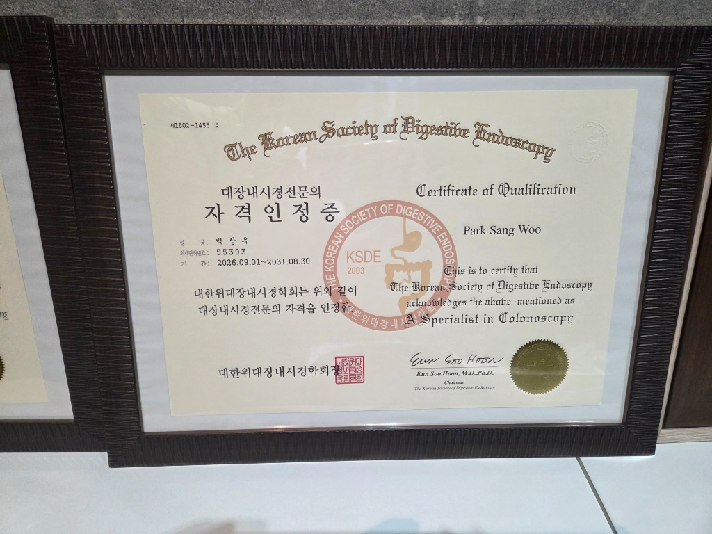

대한위대장내시경학회 인증 대장내시경전문의의 안전한 당일 용종절제술: 계양구 상우내과의원
대장암은 국내 암 발생률 2~3위를 다투는 치명적인 암이지만, 전체 대장암의 85% 이상은 '선종성 용종'이라는 양성 혹 단계를 5~10년에 걸쳐 서서히 거친 후 암으로 발전합니다. 즉, 정기적인 대장내시경을 통해 선종을 조기에 찾아내어 깨끗이 제거하기만 하면 대장암을 95% 이상 완벽히 예방할 수 있습니다. 인천 계양구 계산역 앞 상우내과의원은 대한위대장내시경학회(KSDE) 공식 인증 '대장내시경전문의'가 상주하여 안전한 원스톱 당일 용종절제술(EMR)을 시행합니다.

▲ 대한위대장내시경학회(KSDE) 공식 인증 대장내시경전문의 자격 (제1602-1456호) ※ 본 이미지는 의료진의 실제 학회 공인 전문의 자격 사실을 바탕으로 제작된 디지털 안내 이미지이며, 공식 자격증 원본은 상우내과의원 원내에 비치되어 있습니다.
1. 왜 '대장내시경전문의'의 진료를 받아야 할까요?
대장은 위와 달리 길이가 1.5m 이상으로 길고, 복강 내에서 'S상결장' 등 심한 굴곡과 주름을 형성하고 있습니다. 또한 장벽의 두께가 매우 얇아 미숙한 시술자가 검사할 경우 장천공이나 출혈 등 중대한 합병증의 위험이 존재합니다.
대한위대장내시경학회 공인 '대장내시경전문의'는 장천공 없이 안전하게 맹장 끝까지 도달하는 맹장 삽입 성공률 95% 이상, 그리고 주름 뒤편에 숨은 미세 선종을 놓치지 않고 찾아내는 선종 발견율(ADR, Adenoma Detection Rate) 기준을 엄격하게 충족한 전문의입니다.
💡 대장내시경 전문의 인증의 3대 핵심 요건:
1. 풍부한 임상 증례: 수천 례 이상의 진단 및 치료 대장내시경 시술 성공 경험
2. 당일 용종절제술(EMR) 수기 검증: 점막하 주입 및 올가미 전기술을 통한 안전한 완전 절제 능력
3. 학회 자격 심사 및 지속적인 평점 이수: 5년 주기 재인증을 통한 최신 술기 유지
2. 상우내과의원 '원스톱 당일 용종절제술(EMR)'의 장점
검진 중 용종이 발견되었을 때 조직검사만 하고 큰 병원으로 가라고 안내받아, 다시 장정결제를 복용하고 2차 검사를 받아야 했던 불편함을 겪으신 분들이 많습니다.
상우내과의원에서는 대장내시경전문의가 검사를 진행하며 용종 발견 즉시 당일 현장에서 내시경적 점막하 절제술(EMR, Endoscopic Mucosal Resection)을 즉시 시행합니다. 생리식염수를 점막하층에 주입하여 병변을 안전하게 띄운 후 고주파 올가미로 점막 손상 없이 종괴만을 완벽하게 분리 제거합니다.
| 용종 구분 | 주요 크기 및 형태 | 암 진행 위험도 | 상우내과의원 전문 대처법 |
|---|---|---|---|
| 관상선종 (Tubular) | 대장 선종의 약 80%, 버섯 형태 | 중등도 (크기 증가 시 암 발전) | 크기에 맞춰 저온 올가미 절제술 또는 당일 EMR 점막절제 |
| 융모상선종 (Villous) | 융단처럼 넓게 퍼지는 형태 | 매우 높음 (암 진행률 30~50%) | 올림푸스 NBI 정밀 마진 확인 후 완전 분할 절제 및 조직검사 |
| 톱니상 선종 (Serrated) | 우측 대장 호발, 점막과 편평함 | 높음 (빠른 암 진행 경로) | NBI 확대 관찰로 투명 점액질 세척 후 점막하 융기 절제 |
3. OLYMPUS CV-190 NBI 시스템과 편안한 CO2 가스 주입
상우내과의원은 환자분들의 정밀 진단과 시술 후 편안함을 위해 첨단 장비를 완비하고 있습니다.
상우내과의원 대장내시경 안심 시스템
- OLYMPUS EVIS EXERA III (CV-190): 협대역 화상 강화(NBI) 기술로 용종의 미세 혈관 주행과 표면 구멍(Pit Pattern)을 즉각 분석하여 양성/악성 여부를 실시간 감별합니다.
- 의료용 CO2(이산화탄소) 주입 장치: 일반 공기 대신 체내 흡수가 150배 빠른 CO2 가스를 주입하여, 검사 후 흔히 겪는 복부 팽만감과 쥐어짜는 복통을 획기적으로 줄여줍니다.
- 먹기 편한 장정결제 구비: 물을 적게 마셔도 되는 최신 저용량 장정결제 및 알약형 장정결제를 구비하여 검사 준비의 고통을 덜어드립니다.
4. 인천 계양구 계산역 4번 출구 앞, 신뢰할 수 있는 소화기 클리닉
상우내과의원은 계산역 4번 출구 도보 1분(계양대로 198, 계산메디칼센타 2층)에 위치하고 있습니다.
철저한 1:1 감염 관리와 자동 소독 세척기 운용, 그리고 공인된 대장내시경전문의의 섬세한 수기를 바탕으로 편안하고 신뢰할 수 있는 검진을 약속드립니다. 40세 이상이시거나 대장암 가족력, 배변 습관 변화, 혈변이 있으시다면 상우내과의원에서 조기에 대장 건강을 지키시기 바랍니다.
상우내과의원 오시는 길 및 진료 안내
계산역 4번 출구 도보 1분도로명 주소
인천 계양구 경명대로 1096 계산메디칼센타 2~3층
지하철 이용
인천 1호선 계산역 4번 출구 바로 앞 60m
주차 안내
계산메디칼센타 건물 내 전용 주차장 (진료 무료)
진료 문의전화
외래: 032-551-0860 · 인공신장실: 032-551-0875
💡 의료법 제56조 1항에 따른 안내
본 포스팅의 모든 내용은 상우내과의원에서 직접 작성하였습니다. 제공되는 건강 정보 및 학회 전문의 자격 사실은 객관적 인증에 근거한 것이며, 환자 개개인의 병력 및 상태에 따라 검사 방법과 결과는 달라질 수 있으므로 반드시 내원하여 전문의와 상담하시길 바랍니다.